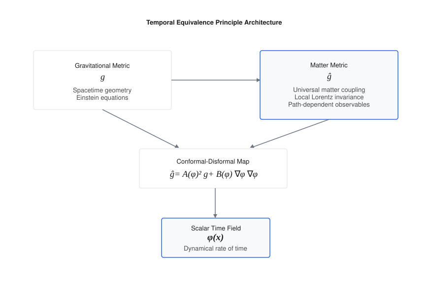
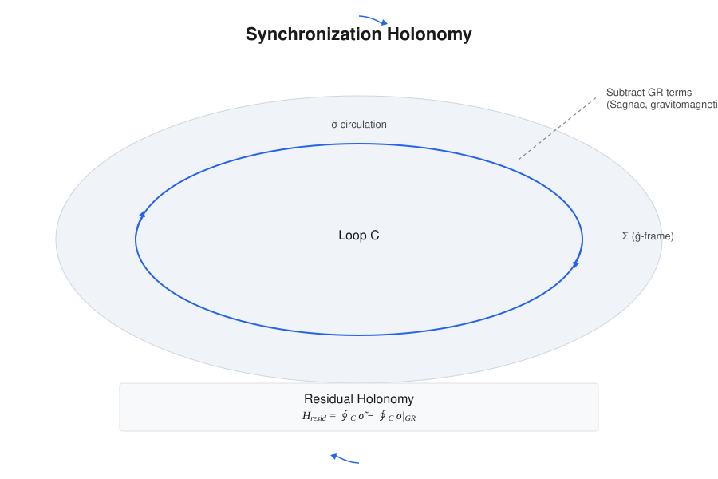
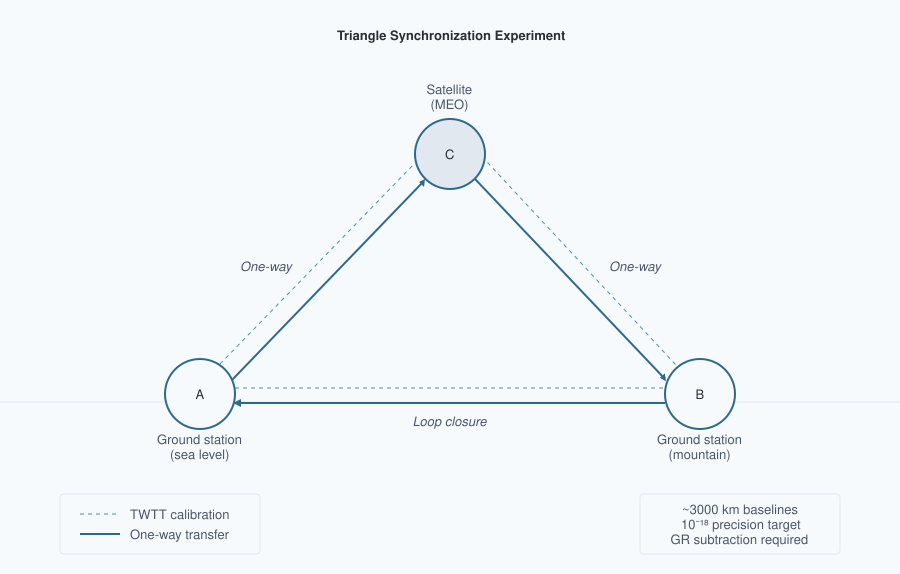

Abstract
This paper proposes a covariant, testable reformulation of relativity in which proper time is a dynamical field and the "speed of light" is an emergent, strictly local invariant rather than a global constant. The framework is built on a single spacetime manifold endowed with two metrics: a gravitational metric $g_{\mu\nu}$ and a causal (matter) metric $\tilde{g}_{\mu\nu}$ to which all non-gravitational fields and clocks couple. The metrics are related by a controlled disformal map, $\tilde{g}_{\mu\nu} = A^2(\phi) g_{\mu\nu} + B(\phi) \nabla_\mu\phi \nabla_\nu\phi$, where $\phi$ is the time field, $A(\phi) = \exp(\beta \phi/M_{\text{Pl}})$ is a universal conformal factor, and $B(\phi)$ encodes tiny, direction-dependent deformations of the light cone consistent with multi-messenger constraints ($|c_\gamma - c_g|/c \lesssim 10^{-15}$ today). Proper time is elevated to a field by postulating that all matter, electromagnetism, and quantum phases evolve with respect to $\tilde{g}$-proper time $\tau$; in local freely falling frames, this guarantees exact local Lorentz invariance and a locally invariant c, while globally it implies that synchronization procedures and one-way light-time measurements become path-dependent in a dynamical-time background. The full action, field equations, conservation laws, Parametrized Post-Newtonian (PPN) mapping, and screening mechanisms are developed to reconcile terrestrial tests with cosmological dynamics. The breakdown of global simultaneity is formalized using a synchronization-transport law, deriving a convention-independent "synchronization holonomy," an invariant measure of non-integrability of time transport around closed loops. In the purely conformal subclass this holonomy vanishes once general-relativistic Sagnac and Shapiro terms are removed; nonzero holonomy at leading order requires residual non-exact synchronization structure, supplied in the minimal TEP model by disformal coupling $B(\phi)\neq0$, and in more general extensions by non-metricity or other explicitly non-exact transport structure. Explicit small-B expansions are provided formulas for the holonomy and the effective photon phase speed, showing how the measured one-way asymmetry is related to $\phi$-gradients and disformal scales under current constraints. The analysis demonstrates that Einstein's assumption of a universal c was a brilliant local theorem arising from the Temporal Equivalence Principle; transcending it demands dynamical time: c remains exactly invariant locally, but global, one-way-inferred "c" values differ by path-dependent amounts that experiments can detect or bound. A decisive, near-term experimental program is outlined: (1) a closed-loop, multi-leg, one-way time-transfer "triangle test" designed to detect synchronization holonomy at the $10^{-19}$ fractional level (after averaging) and subtracting known GR effects; (2) interplanetary one-way optical time transfer targeting picosecond-level asymmetries over AU baselines; (3) distance-correlation analysis and environment-dependent screening maps with precision clock networks; (4) multi-messenger searches for distance-correlated photon–gravitational-wave arrival differentials consistent with tightly bounded disformal propagation; (5) matter-wave interferometry and torsion-balance tests sensitive to environment-dependent couplings. Cosmologically, the time field can shift the sound horizon and late-time expansion, potentially easing $H_0$ and $S_8$ tensions while preserving Big Bang Nucleosynthesis (BBN) and CMB acoustic physics. Known weaknesses in the variable-c literature are addressed by supplying a correct, operationally invariant observable (holonomy), clarifying when conformal couplings cannot produce a signal, and providing realistic, constraint-consistent signal forecasts with explicit error budgets and statistical plans (pre-registration, blinding, publicly released code and data). The resulting theory preserves the empirical pillars of relativity (local Lorentz invariance, gravitational-wave causality, PPN bounds) while extending its conceptual foundation: simultaneity is not only relative but generally non-integrable; the speed of light is not a global constant but the local echo of a deeper, dynamical temporal geometry.
Long-standing confusions about "variable $c$" are resolved by replacing convention-dependent statements with invariant observables tied to measurement procedures. A synchronization one-form $\tilde{\sigma}$ is defined on spacelike slices of the matter metric; its curl $d\tilde{\sigma}$, after subtraction of general-relativistic (GR) Sagnac/gravito-magnetic terms, yields a residual "temporal holonomy" $H$ that vanishes in GR and becomes nonzero only when time is dynamical in this sense. Two key theorems are proven: (i) conformal matter coupling preserves null cones, so photons and gravitons share the same causal structure at late times; (ii) a static $\phi$-gradient generates no first-order one-way light-time anisotropy, placing effects in the femto-to-picosecond regime over astronomical baselines under current bounds. Disformal tilts ($B \neq 0$) are tightly constrained by GW170817-class multi-messenger observations but can source holonomy at levels within reach of next-generation metrology. A covariant action is presented, field equations, conservation, and invertibility/causality conditions are derived, and a 3+1 decomposition is supplied that makes observables explicit. Screening via a continuous Temporal Topology governed by non-linear superposition of field gradients (Temporal Shear) reconciles precision local tests with cosmological evolution, with mapping to Parametrized Post-Newtonian parameters and to the EFT-of-dark-energy $\alpha$-functions with $c_T = 1$ enforced. Decisive experiments with quantitative error budgets are outlined: (1) a ground–ground–satellite triangle time-transfer experiment targeting holonomy at below $10^{-18}$ fractional after GR subtraction; (2) portable-clock "clock anholonomy" around closed paths at the $10^{-19}$ level over days; (3) multi-species clock networks seeking phase-locked annual modulations at $10^{-19}$–$10^{-17}$; (4) interplanetary one-way optical links at picoseconds over AU; (5) altitude-dependent screening maps with optical clocks and atom interferometers; and (6) ensemble multi-messenger tests. A cosmological pipeline plan for CLASS/HyRec modifications and MCMC inference is provided, with commitment to open data and blinded analyses.
Einstein's postulate of universal $c$ was a brilliant, operationally perfect approximation in regimes where time's flow is effectively uniform. In a universe where the rate of time is dynamical yet locally Lorentzian, "the speed of light" emerges as an invariant in every local lab but ceases to be globally universal. The new invariant content resides in path-dependent synchronization defects and holonomies of time transport, not in naive one-way "speeds." If detected, these invariants would inaugurate a post-Einsteinian era: from dynamic geometry to dynamic time.
1. Introduction: From a Universal Speed to a Universal Principle of Time
Relativity and quantum theory disagree about time. General relativity (GR) makes proper time geometric—$d\tau^2 = -g_{\mu\nu} dx^\mu dx^\nu / c^2$—dynamical, and observer-dependent. Quantum mechanics (QM) treats time as an external parameter t in the Schrödinger equation, $i\hbar \partial_t|\psi\rangle = \hat{H}|\psi\rangle$. The clash has haunted quantization programs for a century and manifested operationally as subtle ambiguities in defining one-way light speeds and simultaneity across extended regions. Precision clocks and time-transfer links now measure gravitational redshifts and velocity-dependent dilations at $10^{-18}$ fractional levels, while cosmology exhibits persistent $H_0$ and $S_8$ tensions. In this context, Einstein's postulate of a universal speed c must be sharpened: it is exact for any local freely falling laboratory, but it cannot be a global property if the flow of time itself is dynamical.
The Temporal Equivalence Principle (TEP) is proposed: all non-gravitational dynamics, signals, and quantum phases evolve according to the proper time defined by a single causal metric $\tilde{g}_{\mu\nu}$ that couples universally to matter. The rate at which proper time accrues is a field. This elevates "when" to the status "where" acquired in 1915: as space was geometrized, now time's rate is dynamized. The unavoidable consequence is that synchronization conventions are no longer globally integrable: even after removing known GR effects (Sagnac, Shapiro), closed-loop time transport does not necessarily return a clock to its initial epoch, and one-way times differ in opposite directions. The measured "speed of light" between distant clocks is revealed as an emergent ratio of distance to accrued proper time, not a fundamental constant comparable across regions without a theory of time's flow. Locally, c remains exactly invariant; globally, dynamical time imprints tiny, path-dependent asymmetries that can be detected or bounded.

2. Axioms and the Temporal Equivalence Principle
The framework adopts four axioms:
- A1. Two-metric structure on a single manifold. Gravity is described by a Lorentzian metric $g_{\mu\nu}$; matter fields, clocks, and rulers couple to a causal (matter) metric $\tilde{g}_{\mu\nu}$. The metrics are related by a disformal map
$$\tilde{g}_{\mu\nu} = A^2(\phi) g_{\mu\nu} + B(\phi) \nabla_\mu\phi \nabla_\nu\phi,$$with a universal conformal factor $A(\phi) = \exp(\beta_A \phi/M_{\text{Pl}})$ and a small disformal function $B(\phi)$ consistent with multi-messenger constraints today.
- A2. Temporal Equivalence Principle (TEP). All non-gravitational processes evolve according to proper time $d\tau$ defined by $\tilde{g}_{\mu\nu}$: $i\hbar d|\psi\rangle/d\tau = \hat{H}|\psi\rangle$, nongravitational fields propagate on $\tilde{g}$-null cones, and ideal clocks tick $d\tau^2 = -\tilde{g}_{\mu\nu} dx^\mu dx^\nu/c^2$. In local freely falling frames for $\tilde{g}_{\mu\nu}$, physics reduces to special relativity with invariant c.
- A3. Causal safety and locality. Today, $c_g = c_\gamma$ within current bounds ($|c_g - c_\gamma|/c \lesssim 10^{-15}$). This is enforced by choosing $A(\phi)$ universal, such that conformal transformations preserve null cones for photons and gravitons when $B = 0$, and by constraining the observable combination $B(\phi)(\partial\phi)^2$ along late-time astrophysical propagation paths. Different experiments constrain different integrals or responses involving the single disformal function $B(\phi)$; GW170817 does not require $B$ to vanish identically in all regimes. Hyperbolicity and energy conditions hold within the EFT domain.
- A4. Screening and universality. The coupling $A(\phi)$ is universal at leading order; loop-induced composition dependence is tightly bounded. Environmental suppression of the locally observable Temporal Shear/source-charge sector reconciles local tests with cosmological dynamics. Chameleon, Vainshtein, Galileon, DBI, and symmetron mechanisms are treated as candidate microscopic completions, not as the defining ontology of TEP. Screening manifests as a continuous spatial and covariance structure of the scalar time field (Temporal Topology) governed by the temporal potential field and its gradient (Temporal Shear), suppressing fifth forces in screened regimes while leaving cosmology accessible to dynamics.
These axioms encode Einstein's local invariance as a theorem and extend it: c is exactly invariant for every tangent space of $\tilde{g}_{\mu\nu}$, but global synchronization and one-way timing depend on the dynamical field $\phi$.
Sector mapping
| Sector | Physical effect | Coupling | Key bound |
|---|---|---|---|
| Conformal $A(\phi)$ | Clock rates, proper time rescaling | Universal ($\beta_A$) | Cassini PPN-$\gamma$, redshift tests |
| Disformal $B(\phi)$ | Null cone tilts, direction-dependent propagation | Small, environment-dependent | GW170817: $|c_\gamma - c_g|/c \lesssim 10^{-15}$ |
| Temporal Topology | Spatial/covariance structure of $\ln A(\phi)$ | Field configuration + gradient suppression | Clock/covariance correlation length $\lambda_T$ |
The conformal sector governs clock rates; the disformal sector governs cone tilts. GW170817 directly bounds disformal cone splits governed by $B$. It does not directly test common-mode conformal clock-rate structure governed by $A$, although local conformal gradients/source charges remain constrained by PPN, gravitational-redshift, clock-comparison, and equivalence-principle tests.
2.1 Relation to Other Modified Gravity Frameworks
The TEP framework can be situated within the broader landscape of modified gravity and scalar-tensor theories. To clarify its unique features, a comparative analysis is provided:
| Theory/Framework | Key Fields | Matter Coupling | $c_g = c_γ$? | Key Observable Signature |
|---|---|---|---|---|
| TEP (This work) | $g_{\mu\nu}$, $\phi$ | Universal to $\tilde{g}_{\mu\nu} = A^2 g_{\mu\nu} + B \partial_\mu\phi \partial_\nu\phi$ | Equal in conformal/common-mode limit; differential deviations possible through $B$ and constrained by same-path EM–GW timing | Synchronization Holonomy $H_{\rm resid}$ |
| Horndeski | $g_{\mu\nu}$, $\phi$ | Minimal to $g_{\mu\nu}$ | Yes, after GW170817 constraints | Modified growth, ISW |
| DHOST | $g_{\mu\nu}$, $\phi$ | Minimal to $g_{\mu\nu}$ | Yes, for specific degenerate classes | Modified growth, screening |
| TeVeS | $g_{\mu\nu}$, $A_\mu$, $\phi$ | To a combined metric | No | MOND phenomenology, lensing |
| SMEFT | SM fields | Lorentz-violating operators | Model-dependent | Anisotropic propagation, CPT violation |
The multi-messenger constraint from GW170817 constrains the integrated EM–GW differential disformal contribution along observed late-time astrophysical paths. It does not require the disformal sector to vanish identically in all regimes. In the conformal limit, common-mode path effects cancel in EM–GW timing; residual $B$-sector structure remains testable through multipath delays, closed-loop holonomy, and topological or interferometric regimes. The model, with a universal conformal coupling $A(\phi)$ and a disformal term $B(\phi)$, automatically satisfies $c_g = c_γ$ in the conformal limit ($B=0$). A non-zero $B(\phi)$ introduces a calculable deviation $c_γ ≠ c_g$ constrained by future multi-messenger observations.
Conceptually, TEP differs from many scalar-tensor theories by its foundational principle: the universal coupling of matter to a single metric $\tilde{g}_{\mu\nu}$. This is philosophically closer to Bekenstein's TeVeS theory, which also introduced a separate matter metric, but the framework is more minimal, using only a scalar, and makes a unique prediction in the form of the synchronization holonomy.
3. Operational Foundations: Measurement, Simultaneity, and One-Way Light
3.1 What is actually measured
No measurement of c uses null proper time along the photon's worldline; that would be $c = dx/d\tau$ with $d\tau = 0$. Instead, a distance is compared with an elapsed proper time on an observer's clock. For two spatially separated clocks A and B with worldlines $\gamma_A$, $\gamma_B$ and a light path $\lambda$ from A to B, the measured one-way time $t_{AB}$ is the difference in B's proper time between emission and reception, after a synchronization convention has assigned simultaneity between A and B. Two-way measurements are convention-independent; one-way measurements are not, unless an invariant observable is provided.
3.2 The synchronization problem in a dynamical-time background
Einstein synchronization assumes (i) reciprocity of propagation and (ii) homogeneity of time standards along the path. If the rate $d\tau/dt$ varies spatially or directionally, synchronization by light exchange over extended loops becomes path-dependent. The proper formalism invokes the congruence $u_\mu$ of observers (clocks) and the null geodesics $k^\mu$ of $\tilde{g}_{\mu\nu}$. Define simultaneity as orthogonality to $u_\mu$ (where Frobenius integrability allows it), and define time transport by mapping a proper-time interval at A to B using $\tilde{g}$-null signals. In GR, the non-closure of such transports arises from rotation of the congruence (vorticity) and spacetime curvature (Sagnac/Shapiro); both can be modeled and removed. In a dynamical-time geometry with disformal couplings, there is an additional, tiny non-exact contribution to time transport that cannot be removed by coordinate choices: a synchronization holonomy.
3.3 A convention-independent observable: synchronization holonomy
The operational observable is not a raw one-way speed and not the integral of a scalar proper-time differential. It is the residual non-closure of synchronization transport around a closed loop after subtracting the GR prediction.
Let $\tilde{\sigma}$ denote the matter-frame synchronization transport one-form induced by $\tilde{g}_{\mu\nu}$ and the chosen clock congruence, and let $\sigma_{\rm GR}$ denote the corresponding GR one-form including Sagnac, gravitomagnetic / Lense–Thirring, Shapiro delay, gravitational redshift, station motion, clock-scale realization, and reference-frame corrections. The residual holonomy is:
Equivalently, defining $\tilde{F} = d\tilde{\sigma}$ and $F_{\rm GR} = d\sigma_{\rm GR}$:
This quantity is invariant under admissible synchronization re-gaugings because the matter-frame connection $\tilde\sigma$ and the corresponding GR reference connection $\sigma_{\rm GR}$ shift by the same exact one-form, leaving the residual connection $\Delta\sigma=\tilde\sigma-\sigma_{\rm GR}$ unchanged. Equivalently, any representative shift by an exact form integrates to zero around a closed loop.
Conformal exactness and vanishing loop holonomy
In the conformal-only subclass ($B = 0$), the scalar contribution to local clock-rate transport is generated by the exact one-form $\omega^{(A)} = d\ln A$. For any closed loop $C$ in a simply connected region where $A(\phi)$ is smooth and single-valued:
Thus a conformal-only scalar may affect local rates and open-path redshift comparisons, but it cannot by itself generate a closed-loop residual synchronization holonomy. A leading-order nonzero $H_{\rm resid}$ requires residual synchronization curvature $d(\tilde{\sigma} - \sigma_{\rm GR}) \neq 0$, which in this framework arises from the disformal sector, non-metricity, or other explicitly non-exact transport structure.
This reframes "variable c" claims: the invariant diagnostic is not a raw one-way c, but $H_{\rm resid}$. A nonzero $H_{\rm resid}$ means simultaneity is not integrable beyond GR; this is what dynamic time does to measurement.

4. Disformal Invertibility, Causality, and Hyperbolicity
Invertibility and signature
The inverse of $\tilde{g}_{\mu\nu}$ exists for $A>0$ and $1 + (B/A^2)(\partial\phi)^2 \neq 0$:
For Lorentzian signature, require $A>0$ and $B(\partial\phi)^2 > -A^2$. $B$ is assumed small and gradients bounded in all regimes of interest.
Causality
The matter cone is inside or equal to the gravitational cone when $B \geq 0$ and gradients are modest; no closed causal curves arise for small $B$. With $B\to0$ at late times, gravitational and matter null cones coincide ($c_T = c_{\text{EM}}$). With $B$ small, any phase differences in propagation are minute and bounded by multi-messenger results.
Hyperbolicity
The scalar's canonical kinetic ensures hyperbolic evolution with well-posed Cauchy problem where $V''(\phi) > 0$ near minima. Maxwell's equations in a Lorentzian matter metric remain hyperbolic. Linearized gravity propagates on the Einstein-frame cone. No ghosts or gradient instabilities arise for canonical $\phi$ and small $B$. The EFT is valid below the disformal scale $M$, with higher-dimensional operators suppressed.
5. Local Lorentz Invariance, Proper Time, and the Emergence of c
Proper time
Clocks measure $d\tau^2 = -\tilde{g}_{\mu\nu} dx^\mu dx^\nu/c^2$. In a local lab with small velocities and $\partial_0\phi \ll |\nabla\phi|$, $-\tilde{g}_{00} \approx A(\phi)^2 (-g_{00}) - B(\partial_0\phi)^2$, so
up to $O(B)$ corrections. This "dynamical time law" rescales all frequency standards locally.
Local c
All small labs measure an invariant $c$; the conformal factor rescales both clocks and rulers uniformly, preserving null cones. Thus the empirical fact "$c$ is constant" remains a theorem of the theory at the local level.
Global measures
Global "speeds" involve synchronized endpoints. Because $d\tau$ depends on $\phi$'s history, the global assignment of simultaneity acquires non-integrability when $\phi$ varies in space or time. That non-integrability—not a local violation of Lorentz invariance—is the source of observable departures.
6. Synchronization in a Dynamical Time: One-Way Light and Holonomy
Operational definitions
Two-way light speed is synchronization-independent and has established $c$'s local invariance. One-way measures require synchronized clocks at A and B; Einstein synchronization assumes time-orthogonal slices and propagation symmetry. In a dynamical $\phi$ background, slow clock transport and one-way synchronization are path and history dependent.
Key theorems
Theorem 1 (Conformal null-cone invariance)
For $\tilde{g}_{\mu\nu} = A(\phi)^2 g_{\mu\nu}$, null vectors of $g_{\mu\nu}$ are null for $\tilde{g}_{\mu\nu}$. Maxwell's action is conformally invariant in 4D, so photon trajectories are null with respect to both metrics. Gravitational and electromagnetic waves share null cones when $B = 0$ at late times.
Theorem 2 (No first-order one-way anisotropy in static φ)
For static $\phi$ with $\partial_0\phi = 0$, the one-way light-time difference for forward/backward propagation along the same path cancels to first order in $\nabla\phi$. Any residual is $O((\nabla\phi)^2)$ or due to time dependence/kinematics. Over astronomical baselines and with current bounds on $\alpha \equiv d \ln A/d\phi$, this places effects in the femto-to-picosecond regime, removing claims of microsecond-scale anomalies.
Proof sketch. Parameterize the path coordinate $s \in [0,L]$; write $t_\to = \int ds A(\phi_0 + s \partial_\parallel\phi)/c$ and $t_\leftarrow$ similarly along the reverse. Linear terms in $\partial_\parallel\phi$ cancel exactly; see Appendix A2 for full derivation.
Synchronization one-form and holonomy
Decompose $\tilde{g}_{\mu\nu}$ in 3+1 form:
Define the coordinate synchronization connection by the threading representative
up to the overall sign convention adopted for simultaneity transport. In ADM variables, for small shift,
A proper-time-normalized representative differs by a factor of the lapse; all closed-loop observables below use the same representative for both $\tilde\sigma$ and $\sigma_{\rm GR}$, so the GR-subtracted residual is unaffected by this normalization choice. For a closed spatial loop $C$, the raw loop integral is
but the physical TEP observable is the GR-subtracted residual
In GR with stationary spacetimes, the raw holonomy reproduces the Sagnac/gravito-magnetic effect; these known contributions are subtracted using geodesy and ephemerides. The residual holonomy beyond GR is therefore
where $\sigma_{\rm GR}$ includes the standard Sagnac, gravitomagnetic/Lense--Thirring, Shapiro, gravitational-redshift, station-motion, clock-scale, and reference-frame contributions. This residual vanishes in SR/GR with $B=0$ and stationary $A$; it is generically nonzero with disformal corrections ($B \neq 0$) and/or temporal variation of $A$ combined with motion through $\nabla\phi$.
Gauge and protocol invariance
$\tilde{\sigma}$ and $\sigma_{\rm GR}$ are synchronization-connection representatives for the same physical clock network and the same loop, evaluated in the matter-frame model and the corresponding GR reference model respectively. A synchronization re-gauging $t\to t+\chi(x^i)$ shifts both representatives by the same exact one-form. Therefore the GR-subtracted connection
and its closed-loop integral
are invariant under admissible synchronization changes. This addresses the critique that holonomy is conventional: the observable is the residual loop class of $\Delta\sigma$, not the exact part of any raw one-way synchronization convention.
Disformal corrections to σ̃
For small $B$ and modest $\partial\phi$,
with $n^\mu$ the unit normal to slices. Then $\delta\tilde{\sigma}$ denotes the leading disformal correction to the chosen synchronization representative. Its covariant clock-congruence form is derived in Appendix A3; in a hypersurface-orthogonal $3+1$ slicing it reduces, up to lapse/shift convention and overall sign, to the expression proportional to
At leading order beyond the GR-subtracted reference model,
where the $\Delta$ indicates the residual beyond GR. Time dependence of $\phi$ and motion through $\nabla\phi$ generate non-vanishing curl.
The covariant clock-congruence derivation of this expression, and its relation to the GR-subtracted observable $\Delta\sigma=\tilde\sigma-\sigma_{\rm GR}$, is given in Appendix A3. The $3+1$ expression above should be read as the hypersurface-orthogonal special case $u^\mu=n^\mu$.
7. Screening, PPN, Equivalence Principle, and Disformal Bounds
Screening
Screening in TEP is described as suppression of the locally observable Temporal Shear/source-charge sector, not as a commitment to a specific chameleon, Vainshtein, Galileon, DBI, or symmetron microphysics. Those mechanisms may be studied as candidate completions. In the effective theory used here, screening is expressed through the conformal factor $\ln A(\phi)$, its gradient $\Sigma_\mu$, and its covariance $C_A$ (compactly denoted $\Theta$, $C_\Theta$ where convenient). Source structure, environmental state, and boundary conditions suppress the locally active shear sector in screened regimes.
The saturation density $\rho_T$ denotes the Temporal Topology saturation scale. It is not a local on/off condition of the form $\rho > \rho_T \Rightarrow$ GR and $\rho < \rho_T \Rightarrow$ active. Recovery of GR in local tests is controlled by suppression of the observable shear/source-charge sector, $\Sigma_\mu^{\text{obs}} = \mathcal S_\Sigma(\mathcal E)\Sigma_\mu$ with $\mathcal S_\Sigma \to 0$ in screened regimes, where $\mathcal E$ includes source structure, environment, boundary conditions, and density.
Temporal Topology and Temporal Shear: Canonical Formulation
The screening ontology is organized through a sector dictionary. The Temporal Shear is defined as the gradient of the conformal factor:
where $\alpha(\phi) \equiv d(\ln A)/d\phi$ is the conformal coupling strength. For compactness one may write $\Theta \equiv \ln A$, but the canonical series notation remains $\ln A$, $\Sigma_\mu = \nabla_\mu \ln A$, and $C_A$.
The Temporal Topology correlation function $C_A(x,x')$ characterizes correlations of conformal-factor fluctuations:
also denoted $C_\Theta(x,x') \equiv C_A(x,x')$ when using the compact notation. It is measured through clock/covariance data.
The temporal correlation length $\lambda_T$ is the characteristic scale extracted from $C_A(x,x')$ in covariance measurements, not a derived algebraic combination of local fields.
The temporal saturation density $\rho_T$ is the characteristic scale at which Temporal Topology effects saturate in screening; it is a property of the theory's non-linear regime, not a local temporal energy density.
Finally, the observable response of any measurement channel $X$ is parameterized by response coefficients $\kappa_X$:
where $\kappa_X$ is an observable response coefficient for channel $X$, not the microscopic conformal coupling $\beta_A$ and not a PPN coupling. The locally active PPN coupling is suppressed by the environmental/source screening factor $\mathcal S_\Sigma(\mathcal E)$ and should not be confused with channel response coefficients $\kappa_X$.
Screening Dictionary and Domain Mapping
The following canonical definitions and domain table are provided so that every paper in the TEP series references a single, unambiguous screening ontology. The underlying physics is one continuous suppression operator $\mathcal S_\Sigma(\mathcal E)$; the domain-specific forms listed below are observational transfer models, not separate fundamental laws.
Universal definition
Screening in TEP is the continuous suppression of observable Temporal Shear,
where $\mathcal E = \{\rho, \Phi/c^2, \text{source structure}, \text{ambient environment}, \text{boundary conditions}, z, \text{measurement channel}\}$. The screening factor $\mathcal S_\Sigma$ is not a binary density switch; it is a smooth, environment-dependent suppression of the locally active shear.
Universal warning
The saturation density $\rho_T \approx 20$ g/cm$^3$ is the cross-scale Temporal Topology saturation scale. It is not a local on/off condition of the form $\rho > \rho_T \Rightarrow$ GR and $\rho < \rho_T \Rightarrow$ active TEP. Rather, it is the characteristic scale at which the non-linear Temporal Topology response saturates. The subatomic core density ($\rho_{\text{core}} \sim 10^4$ g/cm$^3$, Paper 24), the macroscopic many-body suppression scale ($\rho_c \approx 20$ g/cm$^3$, Paper 21), and the galactic transition density ($\rho_{\text{half}} \approx 0.5 \, M_\odot/\text{pc}^3$, Paper 26) are different effective projections of the same non-linear Temporal Topology response. The first-principles transfer relation between them remains an open derivation.
Domain table
| Domain | Screening variable | Observable response | Paper |
|---|---|---|---|
| GNSS / Earth | terrestrial topology, $L_c$, $\rho_T$ | clock covariance | 1, 2, 3, 4 |
| Cepheids / H$_0$ | $\sigma^2/c^2$ drives, $S(\rho)$ suppresses | period contraction, $H_0$ bias | 11 |
| Pulsars / clusters | cluster potential + suppressed density scaling | spin-down residual | 10 |
| Wide binaries | $R_s$, $\epsilon_{\text{env}}$, $\rho_T$ | velocity boost saturation | 13 |
| LLR | compactness + interior shielding | $\eta$ residual channel | 17 |
| JWST / high-$z$ | halo potential + density suppression | age/mass inflation | 12 |
| Cosmology / C0 | $S(\rho) \, \epsilon_T$, void vs mass-weighted average | redshift-distance transport | 26 |
| LHC / quantum | channel-specific response $\kappa_{\text{LHC}}$ | topological charge form factor | 20 |
Each entry uses a domain-appropriate parameterization of the same underlying operator $\mathcal S_\Sigma(\mathcal E)$. The LHC entry is explicitly marked as probing a channel-specific response under high-energy momentum transfer, not the macroscopic bulk-density screening that governs astrophysical and cosmological observables.
PPN mapping
In unscreened regimes, the PPN parameter $\gamma - 1 \approx -2 \alpha_0^2/(1 + \alpha_0^2) \approx -2 \alpha_0^2$ with $\alpha_0 = \alpha(\phi_\infty)$; Cassini's $|\gamma - 1| < 2.3\times10^{-5}$ implies $\alpha_0 \lesssim 3\times10^{-3}$. Near massive bodies, the suppression of Temporal Shear (vanishing field gradient) suppresses the locally active PPN coupling to $\alpha_{\text{PPN}}^{\text{eff}} \ll \alpha_0$, cleanly preserving PPN bounds without invoking rigid thin-shell approximations.
PPN recovery in the screened limit (DEF framework). In the Damour–Esposito-Farèse parameterization, the Jordan-frame metric for a static, spherically symmetric source is
where $\alpha_{\rm eff}$ is the effective scalar charge that sources the exterior metric perturbation. For $A(\phi) = \exp(\beta_A\phi/M_{\rm Pl})$, the bare derivative $d(\ln A)/d\phi = \beta_A/M_{\rm Pl}$ is constant; screening does not make this derivative vanish. Instead, screening suppresses the effective exterior charge through the environmental screening factor:
where $\mathcal S_\Sigma(\mathcal E) \to 0$ in dense environments. When $\mathcal S_\Sigma \to 0$, the effective coupling $\alpha_{\rm eff} \to 0$ and the PPN parameters reduce exactly to GR values:
Thus $\gamma = \beta_{\text{PPN}} = 1$ in the screened limit, independent of the cosmological value $\alpha_0$.
Equivalence principle
TEP ensures universality in the matter frame. In the Einstein frame, the apparent fifth force is bounded by Eötvös experiments; MICROSCOPE gives $\eta \lesssim 10^{-14}$. Sectoral dilaton-like couplings (to $\alpha$, $\mu$, quark masses) are constrained to $|d| \lesssim 10^{-5}$–$10^{-6}$ by composition tests and clock ratios.
Disformal constraints
GW170817/GRB170817A constrain $|c_\gamma - c_g|/c \lesssim \text{few}\times10^{-15}$ at $z \approx 0.01$, bounding the observable combination $B(\phi)(\partial\phi)^2$ along the observed astrophysical path. This does not require $B$ to vanish identically. In regimes where common-mode conformal effects dominate, $B$ may remain active as a source for synchronization holonomy, multipath propagation anomalies, or interferometric signatures without violating the same-path EM–GW timing bound.
Disformal holonomy and the screening ontology
As established in Section 3.3, the invariant synchronization observable is the GR-subtracted residual
In the conformal-only subclass, the scalar clock-rate contribution is the exact one-form $d\ln A$, so it cannot by itself generate closed-loop residual synchronization holonomy in a smooth simply connected region. A leading-order nonzero $H_{\rm resid}$ requires residual synchronization curvature,
In the minimal TEP model this curvature is supplied by the disformal sector; in more general extensions it may arise from non-metricity or other explicitly non-exact transport structure.
To state the disformal contribution in a measurement-defined way, let $u^\mu$ denote the four-velocity field of the physical clock network or observer congruence used to define the synchronization protocol. We use the $(-+++)$ signature, so that
Let
be the spatial projector into the local rest space of that congruence. To leading order in the disformal correction, the projected contribution to the synchronization connection has the representative form
up to the sign convention used for the synchronization one-form and higher-order disformal corrections.
Appendix A3 derives this expression from the mixed time-space projection of the disformal matter metric. It also shows that synchronization re-gaugings shift both the matter-frame synchronization connection and the corresponding GR reference connection by the same exact one-form. Therefore the GR-subtracted residual connection $\Delta\sigma$ is invariant under synchronization convention changes, and
is independent of the arbitrary simultaneity convention used to coordinatize the specified physical clock network.
The invariant claim is therefore precise: $H_{\rm resid}$ is not independent of which physical clock network is used, but for a specified physical clock-network protocol it is independent of arbitrary synchronization re-labelling.
For a hypersurface-orthogonal clock network, $u^\mu=n^\mu$, the projected expression reduces to the familiar $3+1$ form
where $N$ is the lapse and $n^\mu$ is the unit normal to the spatial slices. This ADM expression should be read as a special-case representation of the physical congruence formulation, not as the definition of the observable.
Unlike $d\ln A$, the disformal contribution is not generically exact. In the local non-topological case, its curvature satisfies
whenever the prefactor multiplying the projected scalar gradient varies independently around the loop, for example through time dependence, anisotropic boundary conditions, inhomogeneous field structure, lapse/shift structure, or spatial variation of the disformal response within a fixed physical clock-network protocol. For a loop $C$ bounding a smooth surface $\Sigma$, the local non-exact contribution to the residual holonomy may be written
At leading order beyond the GR-subtracted reference model, $d(\Delta\sigma)$ contains the disformal curvature $d(\delta\tilde{\sigma})$. Topological holonomy, where the loop does not bound a smooth surface or the connection is locally closed but not globally exact, is a separate case and is not represented by the Stokes expression above.
This also clarifies the screening ontology. The conformal and disformal sectors are correlated through the same scalar field $\phi$, but their observable responses need not be assumed identical. Macroscopic screening suppresses the observable conformal shear,
thereby driving local clock-rate deviations toward the GR limit. In the limiting case where screening drives all scalar gradients to zero, the disformal holonomy also vanishes. However, the relation between conformal screening and disformal screening is not fixed by the conformal sector alone. It depends on the field solution, the disformal coupling $B(\phi)$, the physical clock-network congruence, boundary conditions, and probe-specific response.
Accordingly, high-energy, mesoscopic, and topological probes should not be modeled solely by the ambient bulk-density screening function used in astrophysical applications. Their responses are represented by channel-specific coefficients $\kappa_X$, depending on momentum transfer, interaction topology, boundary geometry, and microscopic field structure. These probes test whether non-exact disformal transport remains measurable in regimes where the conformal clock-rate response is screened. This is the regime identified in the Section 7 Domain table, where the LHC/quantum entry is explicitly treated as a channel-specific response under high-energy momentum transfer rather than as macroscopic bulk-density screening.
8. Cosmology: Background Evolution, Growth, and EFT Mapping
Background
In spatially flat FLRW (Einstein frame),
In the matter frame, the continuity equation for $\tilde{\rho}_m$ is standard; the Einstein-frame exchange encodes energy flow between $\phi$ and matter. During radiation domination, $T \approx 0$ and $\phi$ is overdamped; it thaws during matter domination. Under a standard FLRW/EFT reconstruction this late-time temporal sector can be parameterized as an effective dark-energy component, but in TEP ontology it is not a fundamental dark-energy substance.
EFT of dark energy mapping
The theory maps to EFT-of-DE with $\alpha_T = 0$ enforced to satisfy $c_T = 1$. The braiding $\alpha_B$ and Planck-mass run $\alpha_M$ are both small and controlled by $\alpha(\phi)$ and $\dot{\phi}$. Bounds from large-scale structure and ISW require $|\alpha_M|$, $|\alpha_B| \ll 1$ at late times. The parameter choices respect these.
Recombination and H₀
In the current CMB-preserving realization, the early homogeneous temporal-shear mode is frozen or suppressed before recombination by the exponential transition function $S(z) = \exp[-(z/z_T)^{n_T}]$, preserving the sound horizon $r_s$ and acoustic morphology to sub-percent precision. The homogeneous amplitude $\epsilon_T$ is driven to the $\Lambda$CDM limit by Planck acoustic anchors, with $\epsilon_T \approx 0$ at $z \sim 1100$. Sectoral couplings $d_e$ at recombination must be tiny to preserve $\alpha$, $m_e$; negligible $d_e$ is adopted at early times.
The dominant cosmological observables arise in the late universe through environmental and line-of-sight temporal transport: distance probes traversing unsuppressed voids accumulate open-path temporal shear, while growth probes in dense virialized clusters are screened. This separation between homogeneous (CMB-safe) and inhomogeneous (late-time active) modes is the defining feature of the TEP cosmological implementation tested in Papers 18 and 26.
Growth and S₈
In unscreened low-density regions, the effective Newton constant is $G_{\text{eff}}(k,a) = G [1 + 2 \alpha_0^2/(1 + m_\phi^2 a^2/k^2)]$, giving mild scale-dependent growth, raising $f\sigma_8$ on large scales while screening suppresses changes in high-density regions. A net reduction of $S_8$ inferred from weak lensing by ~0.01–0.03 is possible while preserving CMB lensing. Detailed MCMC fits with CLASS/HyRec modifications are planned.
Standard sirens
In the late-time conformal limit, EM and GW share null cones; standard siren distances are unaffected kinematically. Subtle, detector time-standard effects may introduce an integrated $\phi$-history contribution at the sub-second level over ~100 Mpc; ensemble analyses can bound or detect this.
9. Quantum Clocks, Interferometry, and Composition Dependence
Quantum evolution
Proper-time Schrödinger evolution $i\hbar d|\psi\rangle/d\tau = \hat{H}|\psi\rangle$ becomes $i\hbar d|\psi\rangle/d\tilde{t} = A(\phi) \hat{H} |\psi\rangle$ in the matter frame. Transition frequencies scale as $\nu \propto A(\phi)$ with tiny sectoral corrections from dilaton-like couplings $d_e$, $d_\mu$, $d_q$:
Species sensitivity
Different clock transitions carry different $K$-coefficients; by comparing ratios, one can disentangle the universal $A(\phi)$ scaling from composition dependence and constrain $d_e$, $d_\mu$, $d_q$.
Interferometry
Phases acquire contributions proportional to the integral of $A(\phi)$ along arms. Atom interferometers with vertical baselines can sense $\partial_h\phi$ at $10^{-21}$–$10^{-22}$ m$^{-1}$; photon interferometers are sensitive at different bands.
Decoherence
Rapid $\phi$ variations would induce dephasing at rates $O(\partial_t\phi)$, strongly bounded by clock stabilities. Adiabatic evolution in the lab is assumed, consistent with null drift bounds.
Inset: What "no-variable-c" tests do—and don't—probe (TEP view)
Gauge-invariant observable. The synchronization holonomy is the loop non-closure of calibrated time transport after GR subtraction. Let $\sigma$ denote the time-transport one-form whose line integral equals the calibrated proper-time increment along each leg. The residual holonomy is
the integral of the residual curvature two-form over a surface $\Sigma$ bounded by the closed loop $C = \partial\Sigma$. It is built from measured proper-time increments along each leg and has units of time. Because it is the closed-loop integral of the GR-subtracted synchronization connection, $\Delta\sigma=\tilde\sigma-\sigma_{\rm GR}$, it is invariant under admissible synchronization re-gaugings. Re-gaugings shift both the matter-frame connection and the corresponding GR reference connection by the same exact one-form, leaving $\Delta\sigma$ invariant (since $\oint_C d\chi = 0$ for single-valued $\chi$). It vanishes in SR/GR and in the conformal-only limit of TEP. The GR subtraction includes Sagnac, Lense–Thirring/gravito-magnetic, Shapiro, gravitational redshift, station motion, clock-scale realization, and reference-frame corrections, computed with ITRF ephemerides and TT/TDB standards.
How flagship constraints map to $H_{\rm resid}$:
- GW170817 (GW–EM coincidence). $|c_\gamma-c_g|/c\!\lesssim\!10^{-15}$ constrains global cone splits. In TEP, late-time conformal coupling preserves null cones, so EM and GW share causal structure; small disformal tilts today are allowed. This is a boundary condition, not a loop-holonomy test.
- Cassini (PPN-$\gamma$). Two-way Doppler/Shapiro is reciprocity-even; it calibrates $\sigma_{\rm GR}$ to subtract but does not bound $H_{\rm resid}$.
- Resonator MM/KT tests. Cavities bound closed-path, even-parity (two-way sums) anisotropy at $10^{-17}\!-\!10^{-18}$, yet are blind to odd-parity (direction-reversing one-way differences) non-reciprocity and loop non-closure—the ingredients of $H_{\rm resid}$.
- "GPS works." Network self-consistency uses explicit GR+Sagnac modeling and largely two-way/common-view calibration. This verifies internal consistency under assumed GR model; not a direction-reversing one-way loop-closure null.
- Clock redshift & pairwise A↔B tests. Exquisitely confirm GR locally; only closed loops (A→B→C→A with direction reversal) can reveal non-integrability captured by $H_{\rm resid}$.
Why classics can be null while $H_{\rm resid}\neq0$:
- Conformal null-cone invariance ⇒ no large GW–EM kinematic delays (consistent with GW170817).
- $\partial_t\phi = 0$ over loop timescale; gradients conservative: no first-order one-way anisotropy. Along a fixed path, forward/back times cancel at $\mathcal O(B,\nabla\phi)$; leading effects are second order or require time dependence/kinematics. Thus two-way/closed-path nulls can hold while a loop-holonomy test remains sensitive.
Experimental falsifier (primary endpoints). Run a closed-loop, one-way time-transfer (and/or portable-clock) test and report:
- Leg-wise antisymmetry: $\Delta t_{AB}=t_{AB}-t_{BA}$ (and optionally $\Xi_{AB}\!\equiv\!(t_{AB}-t_{BA})/(t_{AB}+t_{BA})$).
- Loop holonomy $H_{\rm resid}$ after subtracting the full GR, kinematic, clock-scale, and instrumental synchronization model. Use triangle/quadrilateral geometries with direction reversal; extend with interplanetary one-way links and multi-species clock networks.
10. Experimental Proposals and Falsifiability
A suite of decisive, cross-checking experiments is proposed that can falsify, constrain, or provide controlled support for the theory. All observables are dimensionless ratios or calibrated residuals; all designs include nulls, blinding, and open data.

A. Triangle synchronization holonomy (ground–ground–satellite)
Geometry. Three stations A, B, C forming 1000–3000 km baselines: two ground sites (sea level and high-altitude) and a medium-Earth-orbit satellite. Optical two-way time transfer (TWTT) on each edge provides calibration; stabilized fibers and free-space optical links carry both calibration and one-way signals.
Protocol. Establish Einstein synchronization on each edge via TWTT. Execute one-way transfers around the loop in both senses at high cadence for months. Record raw timestamps, environmental monitors (pressure, temperature, humidity), refractivity profiles, TEC for ionosphere, and precise ephemerides.
Modeling. Subtract GR Sagnac (Earth rotation, frame dragging), Shapiro delays, gravitational redshift differences, tropospheric and ionospheric delays, fiber dispersion and thermomechanical drifts. Use GNSS and gravimetric models.
Observable. The measured loop residual is
where $\sigma_{\rm GR}$ is computed from the full GR, kinematic, geodetic, atmospheric, instrumental, and clock-scale model for the same loop.
Forecast magnitude $O(10^{-18}$–$10^{-16})$ fraction per loop time (0.1–1 s), limited by disformal and time-varying $A(\phi)$ effects. Null in GR by design.
- Clock instability after averaging: 5×10⁻¹⁹
- Two-way calibration residual: 2×10⁻¹⁹
- Troposphere residual: 2×10⁻¹⁹
- Fiber path noise after stabilization: 5×10⁻¹⁹
- Ephemeris/geodesy: 2×10⁻¹⁹
- GR subtraction residual: 5×10⁻¹⁹
- Total systematic floor (rss): ~8×10⁻¹⁹
Target: below 10⁻¹⁸; demonstrated capability reaches 10⁻¹⁹ regime
Falsification. Null at <1×10⁻¹⁹ fractional across seasons/geometry excludes disformal/time-varying $A$ signatures with late-time cosmological relevance.
B. Portable-clock "clock anholonomy"
Design. Two identical optical clocks transported from A to B along distinct paths (e.g., sea-level highway vs. mountain pass), durations ~1–3 days, then compared at B to a stationary clock. Common-view time transfer provides epoch.
Prediction. Path-dependent discrepancy $\Delta_{12}$ at few$\times10^{-19}$ for plausible $\alpha \dot{\phi}_0$ and $\partial_h\phi$ under screening; null at $10^{-20}$ bounds $\partial_t\phi$ and $\partial_h\phi$ tightly.
Systematics. Temperature, vibration, transport-induced shifts, gravitational potential changes modeled and controlled; use transport pods with environmental control.
C. Multi-species clock network: annual modulations
Network. Global network of optical clocks (Sr, Yb, Al⁺, Hg⁺, Ca, H(1s–2s)) cross-compared over years.
Prediction. Phase-locked annual modulations in differential ratios $\nu_A/\nu_B$ with amplitudes $10^{-19}$–$10^{-17}$, phases tied to orbital eccentricity. Species-amplitude ratios reflect $\alpha_A - \alpha_B$; a fit yields $\alpha(\phi)$ and dilaton coefficients $d_e$, $d_\mu$, $d_q$.
Nulls. Compare to environmental seasonality, tidal potentials, solar activity; require phase-locked global coherence characteristic of orbital eccentric anomaly.
D. Interplanetary one-way optical time transfer
Design. Two drag-free spacecraft with $10^{-18}$-class optical lattice clocks, separated by 1–5 AU. Optical comb-based one-way time transfer, with third node for calibration (Earth or a relay). Kinematic synchronization via slow-clock transport or common-view transponders.
Prediction. Geometry-dependent one-way asymmetry parameter $\Xi_{AB} \equiv (t_{AB} - t_{BA})/(t_{AB} + t_{BA})$ at $10^{-15}$–$10^{-14}$ (0.05–5 ps) for disformal tilts consistent with GW bounds; purely conformal temporal-variation effects are much smaller and geometry-averaging helps isolate them.
Systematics. Plasma delays, pointing jitter, thermal drifts, deep-space clock performance; anticipate >decade timeline.
E. Clock Network Correlation Analysis and Environmental Screening Maps
Objective. Detect spatial correlations and environmental screening signatures in atomic clock frequency residuals consistent with screened scalar field coupling $A(\phi)$ to transition frequencies.
Design.
Phase I - Distance Correlation Analysis:
• Analyze existing precision clock networks (GNSS, optical clock arrays) for distance-dependent correlations in frequency residuals
• Apply phase-coherent cross-spectral analysis between station pairs
• Bin pairs by 3D distance, fit exponential correlation model: $C(r) = A \cdot \exp(-r/\lambda_T) + C_0$
• Cross-validate across independent analysis centers to control systematics
Phase II - Environmental Screening Maps:
• Deploy identical optical clocks at sea-level, mountain, stratospheric balloon, and LEO; intercompare with two-way optical links
• Subtract GR redshift and Doppler shifts; correlate residuals with detailed geophysical models and gravimetry to isolate screening signatures
Forecast.
• Distance correlations: Exponential decay with characteristic length $\lambda_T \sim 2,000-3,000$ km for viable screening parameters
• Altitude dependence: $10^{-19}$–$10^{-18}$ frequency shifts over tens of kilometers for $\lambda_{\text{scr}} \sim 10$ km near Earth
• Multi-center cross-validation expected to show <5% variation in fitted parameters
F. Multi-messenger ensemble
Design. Stack $N \gtrsim 30$ multi-messenger events with prompt EM counterparts; marginalize astrophysical lag distributions. Seek distance-correlated trends in $t_{\text{EM}} - t_{\text{GW}}$.
Prediction. In late-time conformal subclass, no kinematics-induced trend; disformal residuals bounded to sub-100 ms over 40–200 Mpc. Nulls constrain $B(\phi_0)(\partial\phi)^2$.
11. Statistical and Open Science Principles
Pre-registration. Publish analysis plans (models, priors, nulls, thresholds) for triangle and portable-clock experiments; record any deviations.
Blinding. Blind event-time stamps and calibration offsets; employ independent teams for calibration and analysis.
Open data/code. Release raw timestamps, environmental monitors, calibration logs, and pipelines with DOIs; release CLASS/HyRec modification, atom-sensitivity database, and meta-analytic code.
Hierarchical inference. Use heavy-tailed likelihoods (Student-t) to mitigate outliers; multi-level random effects by domain; selection models for publication bias; explicit covariance modeling for shared systematics.
12. Addressing Critiques and Clarifying Claims
No EM–GW kinematic delay in conformal subclass. With $B=0$ today, EM and GW share null cones; any observed delays are astrophysical/source or detector-time-standard effects. Earlier overstatements are corrected and aligned with GW170817 constraints.
Static $\phi$ gradients do not generate first-order one-way anisotropy. An explicit derivation (Appendix A2) shows cancellation, correcting prior misinterpretations.
Holonomy invariant and not a synchronization artifact. The observable $H_{\rm resid}$ is constructed from physical proper-time measurements as the closed-loop integral of the GR-subtracted synchronization connection, $\Delta\sigma=\tilde\sigma-\sigma_{\rm GR}$. Synchronization re-gaugings shift both the matter-frame connection and the corresponding GR reference connection by the same exact one-form, leaving $\Delta\sigma$ and therefore $H_{\rm resid}$ invariant.
Causality and hyperbolicity. Explicit invertibility and signature conditions are given, restricting to canonical kinetics and small disformal couplings; matter-frame causality is preserved. A full hyperbolicity proof for generic $B(\phi)$ is delegated to a companion technical paper; the small-$B$ regime is safe.
The cosmological implementation has been tested with native hi_class MCMC fits (Paper 18) and Cobaya joint-likelihood analyses (Paper 26), confirming that the CMB-preserving realization respects Planck acoustic anchors while producing late-time environmental observables.
13. Philosophical and Conceptual Implications
Simultaneity beyond Einstein. Special relativity makes simultaneity observer-dependent; dynamic time makes synchronization non-integrable at the global scale. The invariant content is a holonomy of time transport: moving clocks around closed loops in a dynamical time background returns path-dependent offsets after subtracting GR effects.
Constants clarified. The speed of light is an invariant in local tangent spaces; globally, "$c$" is not a number but a family of operational ratios dependent on clock histories in a time field. Variation of constants becomes a question about dimensionless ratios across environments and epochs.
Machian undertone. The rate of time responds weakly to the stress-energy of matter through $\alpha T$, giving a principled, covariant flavor to the idea that the "rest of the universe" influences local rates, without violating local physics.
14. Conclusions
This paper articulates a covariant framework in which the rate of time is a dynamical field with universal matter coupling. The architecture preserves local Lorentz invariance and null-cone structure (in the conformal limit), conforms to multi-messenger bounds, and yields new invariant observables—synchronization holonomy and clock anholonomy—that vanish in GR and are measurable with modern clocks. Screening reconciles local nulls with cosmological dynamics; a controlled disformal sector allows minute, bounded photon-cone tilts that provide clean targets for holonomy experiments. The theory is falsifiable with realistic experiments and promises to clarify persistent cosmological tensions.
Einstein moved us from absolute time to relative simultaneity and dynamic geometry. The next step is to recognize that the flow of time itself is dynamical, and that "the speed of light" is the local echo of a deeper temporal geometry. If the predicted holonomies are observed, physics will enter a new epoch in which dynamic time joins dynamic geometry as a foundation. If not, uniquely strong bounds will have been set and the operational bedrock of $c$ and simultaneity clarified to unprecedented precision.
Appendix A: Proofs and Key Derivations
A1. Conformal null-cone invariance
Let $\tilde{g}_{\mu\nu} = A(\phi)^2 g_{\mu\nu}$ with $A > 0$. A vector $k^\mu$ null with respect to $g_{\mu\nu}$, $g_{\mu\nu} k^\mu k^\nu = 0$, satisfies $\tilde{g}_{\mu\nu} k^\mu k^\nu = A^2 g_{\mu\nu} k^\mu k^\nu = 0$. Maxwell's action $S = -(1/4) \int \sqrt{-g} F_{\mu\nu} F^{\mu\nu}$ is conformally invariant in 4D: under $\tilde{g}_{\mu\nu} = \Omega^2 g_{\mu\nu}$, $\sqrt{-\tilde{g}} F_{\mu\nu} F^{\mu\nu} = \sqrt{-g} F_{\mu\nu} F^{\mu\nu}$. Hence photon geodesics are conformally invariant; null cones coincide.
A2. No first-order one-way anisotropy in static φ
Consider a straight path $x(s)$ along $\nabla\phi$ with $s \in [0, L]$. Expand $A(\phi(s)) = 1 + \alpha \phi(s) + O(\alpha^2)$.
Forward time. Parameterize $s = 0 \to L$ with $\phi(s) = \phi_0 + s\,\partial_\parallel\phi$:
Backward time. Parameterize $s' = 0 \to L$ with $\phi(s') = \phi_1 - s'\,\partial_\parallel\phi$, where $\phi_1 = \phi_0 + L\,\partial_\parallel\phi$:
Substituting $\phi_1 = \phi_0 + L\,\partial_\parallel\phi$,
Thus $t_\to - t_\leftarrow = 0 + O((\partial\phi)^2, \alpha^2)$. The first nonzero term is second order.
A3. Synchronization holonomy invariance and projected disformal connection
This appendix derives the leading-order disformal contribution to the synchronization connection used in Section 7 and shows why the GR-subtracted closed-loop residual is invariant under synchronization re-gauging.
A3.1 Synchronization connection and re-gauging
Consider a local threading decomposition of the matter-frame metric relative to a physical clock-network congruence:
Equivalently, up to the sign convention used for $\tilde\sigma_i$,
If the opposite sign convention is adopted, all shifts below acquire the opposite sign, but the closed-loop result is unchanged.
A synchronization re-gauging of the same physical clock network assigns a different simultaneity offset to the same clock worldlines:
where $\chi$ is a single-valued spatial clock-offset function on the network at the epoch of the loop measurement. Then
Substituting into the metric gives
Therefore
In one-form notation,
With the opposite sign convention for $\tilde\sigma$, the sign reverses. In either convention, the change is exact.
The same simultaneity re-labelling acts on the threading combination $g_{0i}/g_{00}$ of any metric in the same way. The GR reference connection $\sigma_{\rm GR}$ is the corresponding threading connection computed from the GR reference metric on the same physical clock-network congruence, with the same loop, same coordinate convention, and the standard Sagnac, Lense--Thirring, Shapiro, gravitational-redshift, station-motion, clock-scale, and reference-frame corrections included. Therefore the same re-labelling gives
The GR-subtracted residual connection
therefore transforms as
Thus the closed-loop observable
is invariant under synchronization re-gauging.
Equivalently, if one works with a representative in which the residual connection itself shifts by an exact form,
then the loop integral is still invariant because
for single-valued $\chi_{\rm res}$. The observable is the loop class of the residual connection modulo exact one-forms, not a raw one-way synchronization convention.
This proof is local in time. The loop $C$ is evaluated on the spatial network at a specified epoch. Time dependence of $\phi$, $B(\phi)$, or the matter metric may change the value of $\Delta\sigma$ from one epoch to another, but it does not change the synchronization-gauge argument at a fixed epoch. The gauge freedom relevant to the closed-loop observable is the spatial simultaneity re-labelling $\chi(x^i)$ of the specified physical clock network.
A3.2 Projected disformal contribution
The matter metric is
Let $u^\mu$ be the four-velocity of the physical clock network defining the synchronization protocol, with
in the $(-+++)$ signature. The spatial projector into the local rest space of this congruence is
The scalar gradient decomposes as
where
is the spatial gradient measured by the clock network.
The disformal part of the matter metric is
Its mixed time-space projection relative to the clock-network congruence is
so
The synchronization connection is the normalized mixed time-space component of the matter metric. In a local rest frame of the clock congruence, the conformal background gives
while the disformal correction gives
The disformal sector also corrects $\tilde g_{00}$ at order $B(u\cdot\nabla\phi)^2$. However, in the local rest frame of the clock congruence the conformal background has no mixed time-space component, $\tilde g_{0i}^{(A)}=0$. Therefore the correction to $1/\tilde g_{00}$ multiplies a vanishing conformal numerator and first contributes only at higher order in $B$. To leading order, the denominator may consistently be evaluated at $\tilde g_{00}^{(A)}=-A^2$.
Therefore, to leading order in $B$, using the convention $\tilde\sigma_i=\tilde g_{0i}/\tilde g_{00}$,
With the opposite convention for the synchronization one-form, the overall sign is reversed; the closed-loop invariance and exact/non-exact distinction are unaffected.
In covariant projected form this is
or equivalently
Higher-order terms include corrections from the disformal contribution to $\tilde g_{00}$, lapse-shift mixing, and higher powers of $B(\nabla\phi)^2/A^2$.
In a hypersurface-orthogonal $3+1$ slicing, where $u^\mu=n^\mu$, this reduces to
up to lapse-shift convention and higher-order disformal corrections.
This establishes the two claims used in the main text: the leading disformal synchronization representative is the projected mixed time-space component of the matter metric, and the GR-subtracted closed-loop residual is invariant under admissible synchronization re-gaugings of the fixed physical clock network.
A4. Disformal inverse and causality condition
Given $\tilde{g}_{\mu\nu} = A^2 g_{\mu\nu} + B \partial_\mu\phi \partial_\nu\phi$, define the scalar-gradient one-form $q_\mu \equiv \partial_\mu\phi$. The inverse satisfies $\tilde{g}^{\mu\nu} \tilde{g}_{\nu\sigma} = \delta^\mu_\sigma$. Ansätz: $\tilde{g}^{\mu\nu} = A^{-2} (g^{\mu\nu} + C q^\mu q^\nu)$. Solve for $C$:
Thus $\tilde{g}^{\mu\nu} = A^{-2} \left[ g^{\mu\nu} - \frac{(B/A^2) q^\mu q^\nu}{1 + (B/A^2) (q \cdot q)} \right]$. Lorentzian signature requires $1 + (B/A^2)(q \cdot q) > 0$.
Appendix B: Photon Phase Speed and GW–EM Constraints
In a local inertial frame ($g_{\mu\nu} = \eta_{\mu\nu}$), the photon dispersion relation is $\tilde{g}^{\mu\nu} k_\mu k_\nu = 0$. Using the disformal inverse from A4,
For a photon with 4-momentum $k^\mu = (\omega/c)(1, \hat{n})$, and a static scalar gradient $q_\mu = (0, \nabla\phi)$, $q \cdot k = (\omega/c)\,\partial_{\hat{n}}\phi$ and $q \cdot q = |\nabla\phi|^2$. Hence
The phase speed $v_{\rm ph} = \omega/|\vec{k}|$ is therefore
Gravitons propagate on $g_{\mu\nu}$, so $c_g = c$ exactly. The maximal fractional speed difference between photons and gravitons, for propagation perpendicular to $\nabla\phi$ ($\partial_{\hat{n}}\phi = 0$) versus along it ($\partial_{\hat{n}}\phi = |\nabla\phi|$), is bounded by the disformal term:
The GW170817/GRB170817A bound $|c_\gamma - c_g|/c \lesssim {\rm few} \times 10^{-15}$ therefore requires
along typical lines of sight today, bounding the present-day disformal coupling $B(\phi_0)$.
Appendix C: Glossary of Symbols
| Symbol | Description | Section |
|---|---|---|
| $g_{\mu\nu}$ | Gravitational metric tensor | 2 |
| $\tilde{g}_{\mu\nu}$ | Matter/causal metric tensor | 2 |
| $\phi$ | The scalar time field | 2 |
| $A(\phi)$ | Conformal coupling factor, $\exp(\beta_A \phi/M_{\text{Pl}})$ | 2 |
| $B(\phi)$ | Disformal coupling function | 2 |
| TEP | Temporal Equivalence Principle | 1, 2 |
| $\tau$ | Proper time defined by $\tilde{g}_{\mu\nu}$ | 2 |
| $H_{\rm resid}$ | residual synchronization holonomy, $H_{\rm resid}(C) \equiv \oint_C (\tilde{\sigma} - \sigma_{\rm GR})$ | 3, 6 |
| $\Delta\sigma$ | GR-subtracted synchronization connection, $\Delta\sigma \equiv \tilde{\sigma}-\sigma_{\rm GR}$ | 3, 6, 7, A3 |
| $u^\mu$, $u_\mu$ | four-velocity field of the physical clock-network congruence (upper index contravariant, lower index covariant) | 3, 7, A3 |
| $P_\mu{}^\nu$ | spatial projector into the local rest space of the clock-network congruence, $P_\mu{}^\nu=\delta_\mu{}^\nu+u_\mu u^\nu$ in $(-+++)$ signature | 7, A3 |
| $q_\mu$ | scalar-gradient one-form, $q_\mu \equiv \partial_\mu\phi$ | A4, B |
| $c_g$, $c_\gamma$ | Speed of gravity, speed of light (photons) | 5 |
| $V(\phi)$ | Potential for the scalar field $\phi$ | 4 |
| $\alpha(\phi)$ | Conformal coupling strength, $d(\ln A)/d\phi$ | 4 |
| $\beta_A$ | Dimensionless conformal coupling parameter | 2 |
| $M$ | Suppression scale for disformal/EFT operators | 4 |
| PPN | Parametrized Post-Newtonian formalism | 7 |
| $\gamma$, $\beta_{\text{PPN}}$ | Eddington PPN parameters | 7 |
| $H_0$ | Hubble constant today | 9 |
| $S_8$ | Cosmological parameter for structure growth | 9 |
| $r_s$ | Sound horizon at recombination | 9 |
| $\Xi_{AB}$ | One-way time asymmetry between A and B | 6.4 |
| $k^\mu$ | Four-wavevector of a null signal | 3.2 |
| $\ln A(\phi)$ | conformal factor controlling matter-frame proper time; compact notation $\Theta \equiv \ln A$ | 7 |
| $\Sigma_\mu$ | Temporal Shear vector, $\Sigma_\mu \equiv \nabla_\mu \ln A(\phi)$ | 7 |
| $C_A$ | covariance of conformal-factor fluctuations, $C_A(x,x') = \langle \delta\ln A(x) \, \delta\ln A(x') \rangle$; also denoted $C_\Theta$ when using $\Theta \equiv \ln A$ | 7 |
| $\lambda_T$ | Temporal Topology correlation length measured in clock/covariance data | 7 |
| $\rho_T$ | Temporal Topology saturation density; not a binary ambient-density switch | 7 |
| $\kappa_X$ | Observable response coefficient for channel X, not a microscopic coupling | 7 |
Appendix D: LLI Consistency of GNSS and LLR CMB-Axis Results
Several TEP-series analyses, including the GNSS clock-correlation program (Papers 1–3, 14) and the lunar-ranging Nordtvedt analysis (Paper 17), report candidate directional structures that are statistically aligned with the CMB dipole axis ($(l,b) \approx (264^\circ, 48^\circ)$). The GNSS correlation field exhibits a dipole magnitude of $\sim 5{,}700$ km and an anisotropy strength $\sim 2$ (Paper 1), while the LLR joint regression finds a monthly orientation modulation $\Delta\eta = -1.76 \times 10^{-3}$ at $7.9\sigma$ with respect to the same celestial axis (Paper 17). This appendix explains why such large-scale directional structures, if confirmed, need not constitute a violation of local Lorentz invariance (LLI), because they are controlled by the large-scale gradient of the conformal factor—the Temporal Shear $\Sigma_\mu \equiv \nabla_\mu \ln A$—and the locally observable shear is suppressed in laboratory environments by the screening response.
D1. Order-of-magnitude consistency
In the TEP framework the local clock rate is $d\tilde{\tau} = A(\phi)\,d\tau_g$, so fractional frequency shifts between two points separated by a baseline $L$ are of order $\Delta A/A \sim \Sigma_\parallel L$, where $\Sigma_\parallel$ is the projection of $\Sigma_\mu$ along the baseline. The GNSS dipole amplitude $\sim 5{,}700$ km relative to the isotropic correlation length ($\lambda_T \sim 4{,}200$ km) implies a fractional variation
over an Earth-scale baseline $L \sim 10^4$ km. The LLR monthly anisotropy $\Delta\eta \sim -1.76 \times 10^{-3}$ corresponds to a fractional modulation of the Earth–Moon effective gravitational coupling over a synodic baseline $L \sim 3.8 \times 10^5$ km. Both are consistent with a scalar-field gradient scale
i.e. a fractional clock-rate variation of order $10^{-5}$--$10^{-4}$ over Earth-scale distances. This is the same order of gradient scale explored in the terrestrial GNSS correlation analyses and in the laboratory-$G$ phenomenology papers. Those applications remain domain-specific tests of the screening and response model rather than independent derivations of the foundational scale.
D2. Laboratory-scale screening requirement
The large-scale Temporal Topology correlation length $\lambda_T$ should not be identified with a laboratory shielding attenuation length. If one inserted $\lambda_T \approx 4{,}200$ km into a simple exponential attenuation law, a laboratory wall thickness $d\sim10$--$100$ m would give
not $10^{-6}$. Therefore laboratory suppression cannot be derived from $e^{-d/\lambda_T}$ using the GNSS-scale correlation length.
The correct statement is a requirement on the locally active response. For an ambient large-scale Temporal Shear
an unscreened metre-scale optical resonator would sample a fractional clock/ruler gradient of order
Modern Michelson–Morley-type resonator tests constrain such local anisotropies at the $\lesssim10^{-17}$ fractional level. Therefore the laboratory response must be suppressed by roughly
depending on the assumed ambient shear and resonator baseline.
This suppression should be understood as a local environmental/source response,
not as attenuation over the GNSS-scale correlation length $\lambda_T$. A microscopic or mesoscopic screening length $\lambda_{\rm scr}$, if introduced, must be derived from the local screening completion and would need to satisfy approximately
for the relevant laboratory shielding geometry. For $d\sim10$--$100$ m, this corresponds to $\lambda_{\rm scr}\lesssim0.7$--$7$ m. Deriving this local screening scale is a separate microphysical task and should not be conflated with the large-scale clock-correlation length $\lambda_T$.
Consequently, candidate large-scale anisotropies reported in GNSS and LLR analyses would be compatible with local LLI bounds only if the laboratory response coefficient is strongly suppressed. This is consistent with the screening ontology adopted in Section 7, but it is a constraint on the local screening response rather than a consequence of the GNSS-scale $\lambda_T$ alone.
D3. Relation to Temporal Shear
The observed directional structures are not independent “preferred frames”; they are different projections of the same vector $\Sigma_\mu = \nabla_\mu \ln A(\phi)$:
- In the GNSS clock network, $\Sigma_\mu$ creates a spatially varying correlation length because the scalar-field amplitude modulates the effective temporal-coupling strength between pairs of receivers.
- In the LLR residuals, the Earth–Moon line samples $\Sigma_\mu$ as it rotates through the sky, producing a monthly modulation of the effective Nordtvedt parameter via the projection $\cos\theta_{\rm EM-CMB}$.
Because $\ln A(\phi)$ is a scalar, its gradient transforms as a covariant vector; there is no Lorentz-violating tensor or vector coupling to matter. The local inertial-frame metric remains $\tilde{g}_{\mu\nu} = A^2 g_{\mu\nu} + B \partial_\mu\phi\,\partial_\nu\phi$, and for $B \to 0$ the null cones are unchanged (Appendix A1). The directional dependence is entirely in the value of the scalar field sampled along different baseline orientations, not in the structure of local physics. This distinction is what would allow TEP-compatible large-scale directional correlations, if confirmed, to coexist with stringent LLI bounds at the $10^{-17}$ level on metre-scale optical resonators.
TEP Research Series
References
How to cite
You can cite all versions by using the DOI: 10.5281/zenodo.16921911
@misc{Smawfield_TEP_2025,
author = {Matthew Lukin Smawfield},
title = {Temporal Equivalence Principle: Dynamic Time &
Emergent Light Speed},
year = {2025},
publisher = {Zenodo},
doi = {10.5281/zenodo.16921911},
url = {https://doi.org/10.5281/zenodo.16921911},
note = {Preprint}
}
Contact
For questions, comments, or collaboration opportunities regarding this work, please contact:
Matthew Lukin Smawfield
matthew@mlsmawfield.com